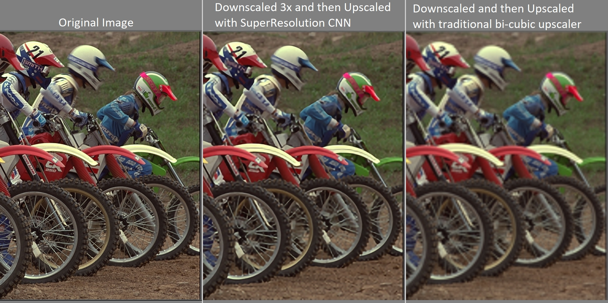
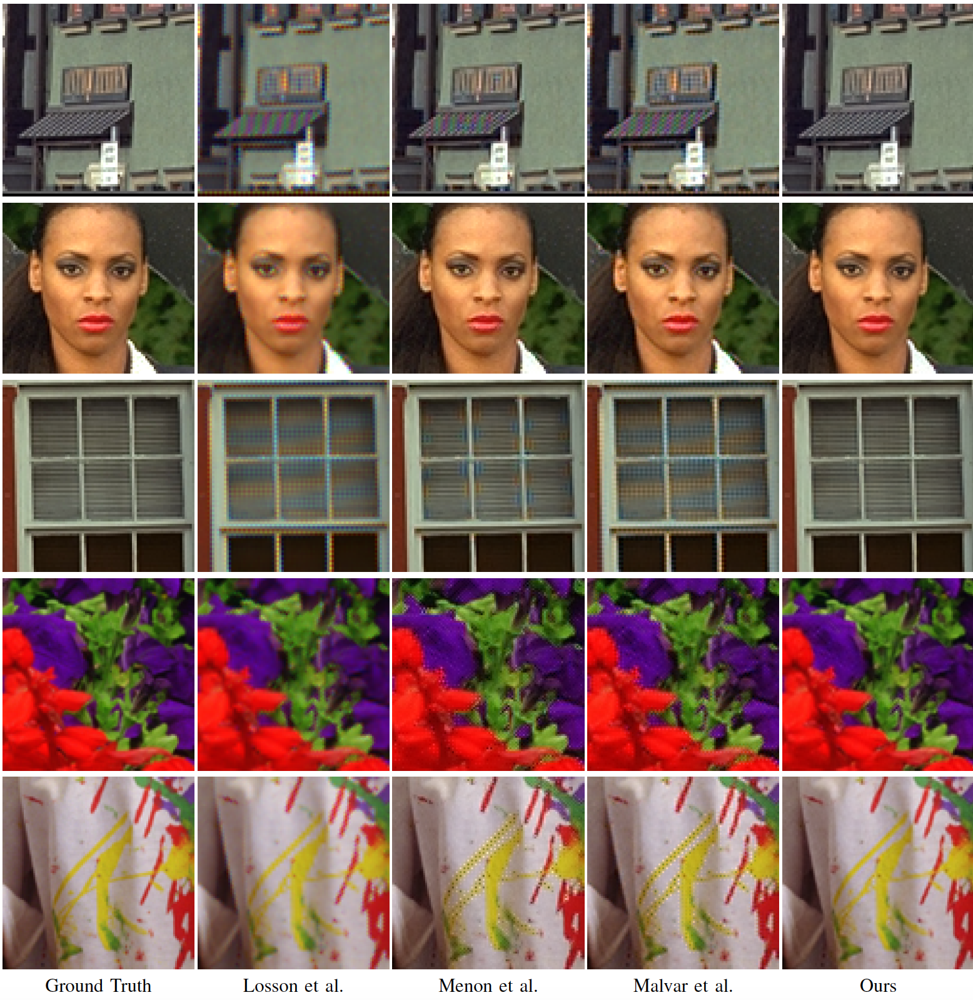
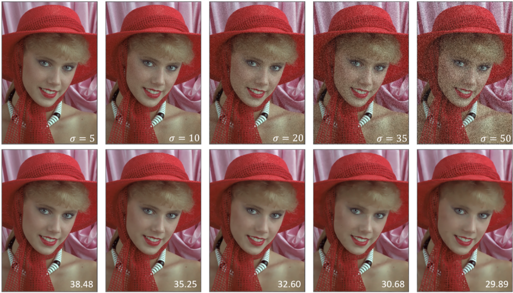
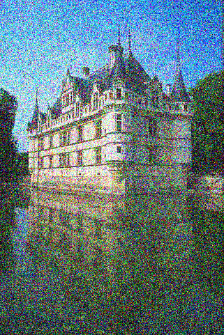
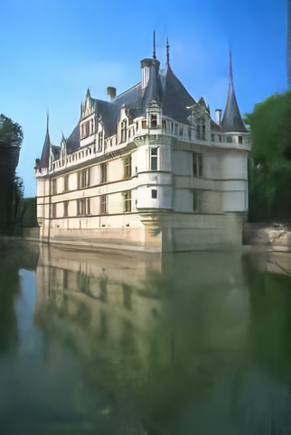
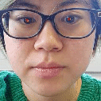
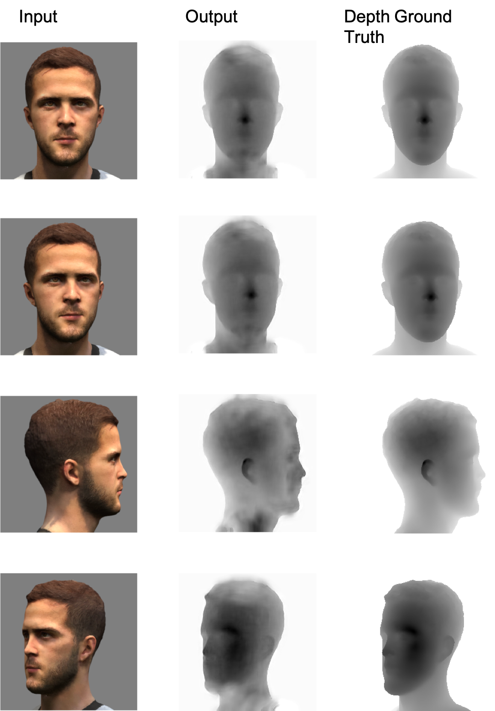

From scientific research to commercial applications, we try to apply deep learning approaches into various computer vision tasks. We adopt convolutional neural networks on ill-posed image reconstructions problems such as: image super-resolution, image demosaicking, image denoising and over-exposure correction. Besides, we also investigate deep learning based computer vision on virtual reality and augmented reality, such as depth reconstruction, gazing tracking, eye contact on video conference and so on.
Image Super-resolution
# Low-level Computer Vison
We presente a simple and effective framework for image super resolution, and propose a novel CNN with a self-feature based loss network that is capable of reconstructing
images of pleasing visual quality. We speculate that keeping consistency of features and
network will remove the artefacts caused by features from pre-trained networks. The proposed
use of self-feature loss approach provides new insights into designing CNNs capable
of performing optimally in wider application areas of imaging. A new insight to designing novel loss estimation functions for deep learning architectures.

Image Demosaicking
# Low-level Computer Vison
A fast and flexible network, namely DemoNet, is proposed for image demosaicking. By taking a tunable CFA pattern as input, DemoNet can be generalized to any CFA pattern with a simple modification. DemoNet exhibits perceptually appealing results with the end-to-end solution, without requiring extra aid to overcome the challenging artifacts, demonstrating its potential for pratical image demosaicking. We perform in-depth analysis on the impact of different guidance prior information of CFA patterns. Our findings provide empirical knowledge on CNN architecture design for future image demosaicking research.

Hard case demo: NO salient artifacts: aliasing, zippering, false colour, blur… most all current methods prone to them.
Over-exposure Correction
# Low-level Computer Vison
Over-exposure(OE) artifact occurs when a limited dynamic range of digital imaging device records the bright scene of which luminance level is higher than saturation level of the sensor. Correcting over-exposure aims to recover the fine details from the input. Existing methods are proposed mainly from the perspective of manually image pixel manipulation, therefore often come at the cost of high computational and algorithmic complexity. Recently, some deep learning based approaches on high dynamic range (HDR) reconstruction can be treated as image correction because their output HDR image can be tone mapped into the low dynamic range (LDR) image. However, existing tone mapping methods always fail to preserve the local details from the HDR domain when OE happens. In this paper, we present OEC, a convolutional neural network (CNN) for over-exposure correction. To our knowledge, it is the first framework capable of inferring photo-realistic natural images for over-exposure in LDR domain. To achieve this, we construct a training dataset of over-exposed and ground truth image pairs for end-to-end learning. Experimental results demonstrate the advantage of our method over existing OE correction methods with a significant margin.
Image Denoising
# Low-level Computer Vison
A flexible denoising network, namely BiDNet, is proposed for non-blind and blind image denoising.To our best knowledge, this is the first network is adequate for those both cases and performance the state-of-the-art. We highlight CNNs are able to learn a direct mapping function instead of modeling image priors explicitly. Our model exhibits perceptually appealing results on both noisy images corrupted by AWGN and real-world noisy images, demonstrating its potential for practical image denoising.

The left is the noisy image corrupted by AWGN with noise level 75. The right is the denoised image by ours.


Gaze Tracking
# Vison in VR/AR
Gaze tracking is a process where the eye gaze is measured to deduce where a person is looking and what element of their environment they are paying attention to. How little has been done in this area, our project focuses on this eye tracking algorithm in order to add knowledge to the development of CNNs for eye tracking.

Depth Reconstruction from a Single Still Image
# Vison in VR/AR
Estimating depth information from single monocular images depicting general scenes is an important problem in computer vision. Many challenging computer vision problems have proven to benefit from the incorporation of depth information, to name a few, semantic labellings, pose estimations. Compared with depth estimation using multiple images such as stereo depth perception, depth from monocular images is much more challenging. Here, we present a deep convolutional neural network for estimating depths from single monocular images

Synthesis of Image for Virtual Camera
# Vison in VR/AR
We explore the capacity of CNN for occlusion handling by investigating the image synthesis for virtual cameras placed between two actual cameras. This can be applied into AR area.